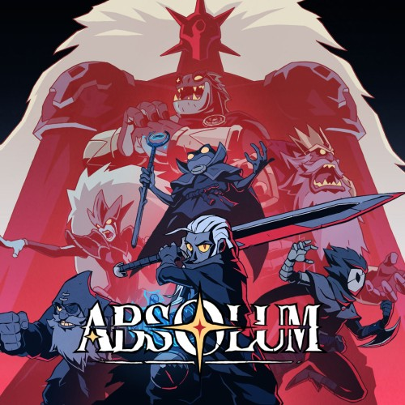

Absolum
Genres: Beat'em up, roguelike
Website
Developer: DotEmu, Supamonks
Publisher: DotEmu
Platforms: Microsoft Windows, Nintendo Switch, PlayStation 4, PlayStation 5
Released: 2025, October 9
Rated: Not Rated
Absolum is a side-scrolling beat'em up video game. It features multiple character classes, with each having its own unique combat style and abilities. Karl is a dwarf who fights enemies with his guns and bare fists; Galandra the elf is equipped with a huge sword; Cidar is an agile character who wields two daggers which allow her to attack quickly; Brome is a humanoid frog and a wizard who can surf in the air using his septor. Each character has a basic light and heavy attack. Consecutive attacks against an enemy will build up combos and mana for the player character, which can be used to unleash 'Arcana', a special attack that can deal significant damage to their opponents. Players can also dodge or sidestep to avoid incoming attacks. Dodging or attacking an opponent just before their hit lands on the player character will deflect it, leaving them in a stunned state.
The game also features elements commonly found in roguelike games. At the beginning of each run, the player character can equip themselves with 'Rituals', which are passive abilities and bonuses that alter their attacks. As players clear combat encounters, they will unlock more Rituals for use in combat, though all Rituals equipped will be lost if the player character is killed in combat. Level layout and the Rituals players found in a level is randomized. Defeated players will return to a realm where they can recover their health and shop for new upgrades or permanent unlocks before they go for their next run. Defeating a boss may unlock 'Inspirations', which are active combat skills. The game also features elements found in role-playing video games, such as side quests and diverging paths. The game also supports two-player cooperative multiplayer.